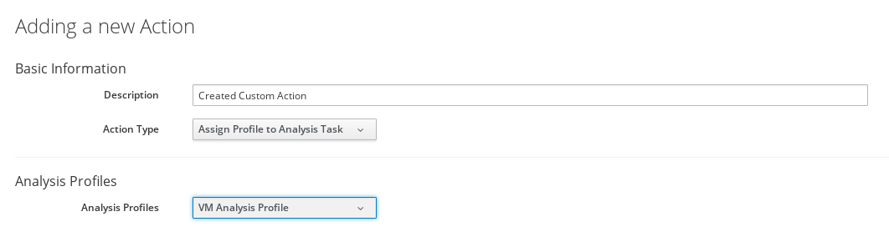
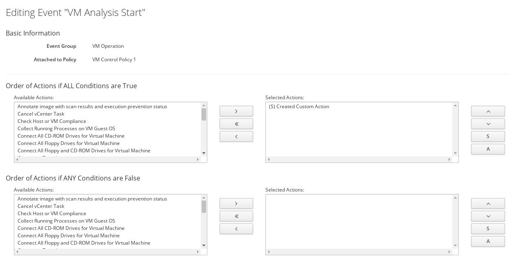

Assigning a Custom Analysis Profile to a Virtual Machine
You can create and assign different analysis profiles for specific virtual machine configurations using the ManageIQ user interface. This document describes the steps required to create a custom virtual machine analysis profile, and assigning it to a virtual machine for use with SmartState analysis, via a control policy.
-
Creating a Virtual Machine Analysis Profile.
-
Creating an Action to Assign the Virtual Machine Analysis Profile to Analysis Task
-
Creating a Virtual Machine Control Policy.
-
Creating a Policy Profile and Assigning the Virtual Machine Control Policy.
-
Assigning the Policy Profile to a Virtual Machine.
Creating a Virtual Machine Analysis Profile
-
Log into the appliance as the admin user.
-
Click Configuration.
-
Expand the Settings accordion, then click Analysis Profiles.
-
Click
 (Configuration), then
(Configuration), then
 (Add VM Analysis Profile).
(Add VM Analysis Profile). -
In Basic Information, enter Name and Description for the analysis profile.
-
In the Category tab, select the categories you want to collect information for under Category Selection. The Category tab is available for virtual machine profiles only.
-
In the File tab, click <New Entry> and specify the file to be scanned and if you want to collect contents for, then click Save. Repeat the step for adding multiple file name entries.
-
In the Registry tab, enter the Registry Key and Registry Value, then click Save. To determine whether a registry key exists without providing a value, enter ` ` in *Registry Value</emphasis>. The Registry tab is available for virtual machine profiles only.
-
In the Event Log tab, specify the event log entries to collect. Enter a Filter Message to look for specific text in a message. Enter a Level (info, warn or error, for example) to specify the event level. Enter the Source for the event log entry and # (Number) of Days to specify how far back to check.
-
Click Add.
Creating an Action to Assign the Virtual Machine Analysis Profile to the Analysis Task
Actions are performed after the condition is evaluated. You can associate actions with specific events when you create a policy. ManageIQ provides a set of default actions, but you can also create custom actions using the ManageIQ user interface.
Use this procedure to create a custom action by adding the Assign Profile to Analysis Task action type to the virtual machine analysis profile (created in Creating a Virtual Machine Analysis Profile).

-
Browse to menu: Control > Explorer.
-
Expand the Actions accordion and click Configuration, then
(Add a new Action). -
Enter a Description for the new action. This will be the name given to your new action.
-
Select Assign Profile to Analysis Task from the Action Type list.
-
Select the newly-created virtual machine analysis profile from the Analysis Profiles list.
-
Click Add.
Note:
You can only associate this action with an analysis start event.
The action is created and added to the Available Actions list. Associate this action with the VM Analysis Start event when you create a virtual machine control policy in the next procedure.
Creating a Virtual Machine Control Policy
You can create a control policy by combining an event, a condition, and an action. The procedure below describes how to create a virtual machine control policy to assign the newly-created action to the VM Analysis Start event. Optionally, you can use a scope expression that is tested immediately when the policy is triggered by an event. If the item is out of scope, then the policy will not continue on to the conditions, and the assigned action will not run.
-
Browse to menu: Control > Explorer.
-
Expand the Policies accordion, and click Control Policies.
-
Select Vm Control Policies.
-
Click
Configuration, then Add a New VM and Instance Control Policy. -
Enter a Description. This will be the name given to your VM control policy.
-
Clear the Active box if you do not want this policy processed even when assigned to a resource.
-
Optional: Enter a Scope (you can also create a scope as part of a condition, or not use one at all). If the virtual machine is not included in the scope, the assigned action will not run.
- You can use the drop-down list to create an expression for the Scope. Based on what you choose, different options appear. Click Commit expression element changes to add the scope.
-
Enter Notes if required.
-
Click Add. The policy is added and listed under Vm Control Policies in the Policies accordion.
-
Select the newly-added VM control policy. You can now associate events, conditions, and actions with the policy.
-
Click
Configuration, then  Edit this Policy’s Event assignments.
Edit this Policy’s Event assignments. -
Under VM Operation, set VM Analysis Start to Yes.
-
Click Save.
-
Click the VM Analysis Start event to configure actions.
-
Click
Configuration, then Edit Actions for this Policy Event. -
In Order of Actions if ALL Conditions are True, select the action created in Creating an Action to Assign the Virtual Machine Analysis Profile to the Analysis Task from the Available Actions list. This action will take place if the resources meet the conditions of the policy.

Note:
Each selected action can be executed synchronously or asynchronously; a synchronous action will not start until the previous synchronous action is completed, while an asynchronous action allows the next action to start whether or not the first action has completed. Also, at least one ManageIQ server in the ManageIQ zone must have the notifier server role enabled for the trap to be sent.
-
Click (
 ) which will move the action to Selected Actions. The selected action is set to (S) Synchronous by default. From Selected Actions, select the action, then:
) which will move the action to Selected Actions. The selected action is set to (S) Synchronous by default. From Selected Actions, select the action, then:-
Click A (Set selected Actions to Asynchronous) to make it asynchronous.
-
Click S (Set selected Actions to Synchronous) to make it synchronous. If creating a synchronous action, use the up and down arrows to identify in what order you want the actions to run.
-
-
Click Save.
Creating a Policy Profile and Assigning the Virtual Machine Control Policy
Add a new policy profile and assign the virtual machine control policy (created in Creating a Virtual Machine Control Policy) to it.
-
Browse to menu: Control > Explorer.
-
Expand the Policy Profiles accordion, click
Configuration, then Add a New Policy Profile. -
In the Basic Information area, enter a Description for the policy profile.
-
Under Policy Selection, select the virtual machine control policy created in Creating a Virtual Machine Control Policy from the Available Policies list.
-
Click (
) to move the selected virtual machine control policy into this profile. -
Click Add.
Assigning the Policy Profile to a Virtual Machine
Assign the policy profile you created in Creating a Policy Profile and Assigning the Virtual Machine Control Policy to a virtual machine, and initiate SmartState analysis.
Note:
Policy profiles can be specified at multiple levels. If you assign a policy profile to a provider (Amazon EC2 or OpenStack for example), the profile will apply to all hosts or virtual machines for that provider.
-
Browse to menu: Compute > Clouds > Instances or menu: Compute > Infrastructure > Virtual Machines. Select the virtual machine or instance.
-
Click
 Policy, then Manage Policies.
Policy, then Manage Policies. -
Under Select Policy Profiles, select the policy profile created in Creating a Policy Profile and Assigning the Virtual Machine Control Policy. It will turn blue to show the selection. Click the triangle next to the policy profile to see its member policies.
-
Click Save.
-
Click
Configuration, then Perform SmartState Analysis. A pop-up window appears to confirm the action. -
Click OK. SmartState analysis is initiated for the selected virtual machine or instance from the ManageIQ database.
SmartState analysis will now report back findings specified by the custom virtual machine analysis profile.